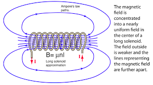
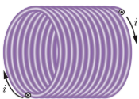
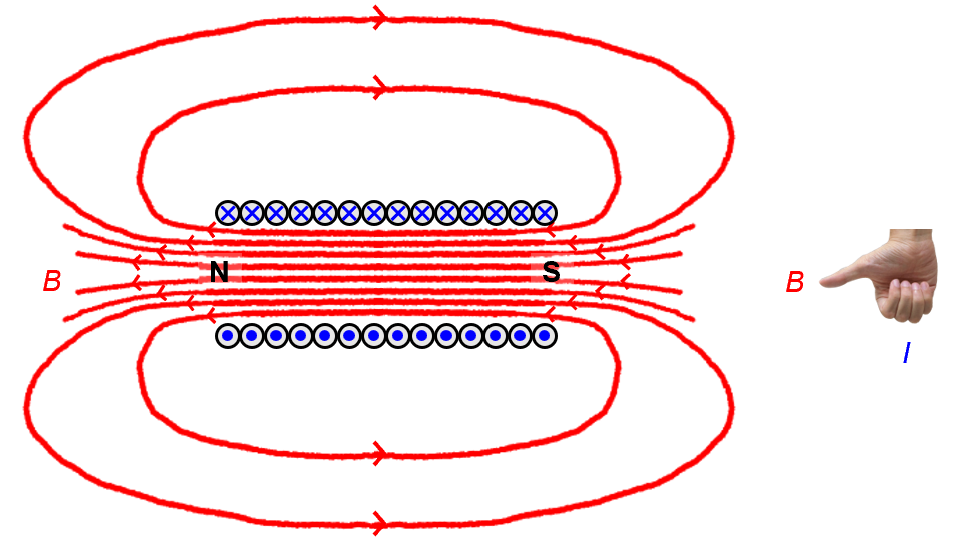
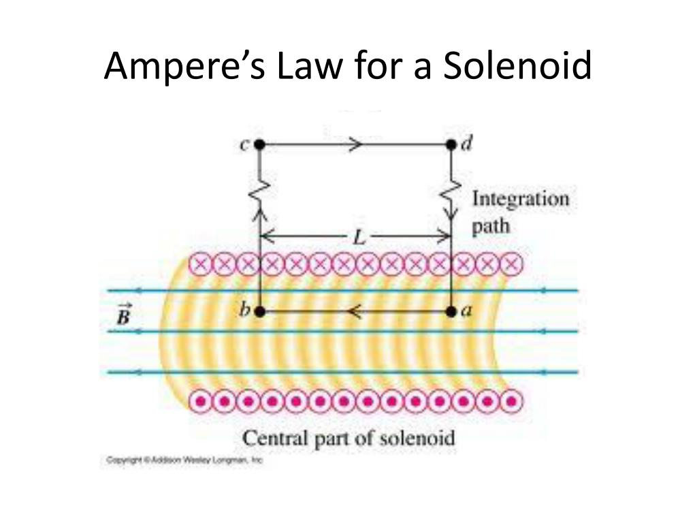

← Back to Concepts
Solenoid Basics
A solenoid is a coil of wire wound in a helical pattern that creates a uniform magnetic field when current flows through it. Solenoids are fundamental components in electromagnetism and have numerous practical applications.
What is a Solenoid?
🧲 Solenoid Definition
A solenoid is a long coil of wire with many turns that produces a nearly uniform magnetic field inside when current flows through it.
The magnetic field inside a solenoid is approximately uniform and parallel to the axis of the coil.

Diagram showing a solenoid with current flow and magnetic field lines inside.
Solenoid Diagrams
In diagrams, solenoids are often represented using "×" (cross) to indicate current or field going into the page, and "●" (dot) to indicate current or field coming out of the page. This notation helps visualize the three-dimensional direction of current or magnetic field lines in two-dimensional drawings.

Current going into the page and out of the page for a solenoid.

Common solenoid diagram notation: "×" for into the page, "●" for out of the page.
Magnetic Field Inside a Solenoid
⚡ Field Calculation Using Ampère's Law
The magnetic field inside a long solenoid can be calculated using Ampère's Law :
\[ B = \mu_0 nI \]
Where:
\( B \) is the magnetic field strength
\( \mu_0 \) is the permeability of free space (4π × 10⁻⁷ T⋅m/A)
\( n \) is the number of turns per unit length
\( I \) is the current through the solenoid

Amperian loop in a solenoid
Derivation Using Ampère's Law
To derive this formula using Ampère's Law :
Choose Amperian Loop: Use a rectangular loop with one side inside the solenoidApply Ampère's Law: \( \oint \vec{B} \cdot d\vec{l} = \mu_0 I_{enc} \)Calculate Enclosed Current: \( I_{enc} = nLI \) where \( L \) is the length of the loopEvaluate the Integral: \( BL = \mu_0 nLI \)Solve for B: \( B = \mu_0 nI \)
Key Properties of Solenoids
🔬 Important Characteristics
Uniform Field: The magnetic field is nearly uniform inside a long solenoidField Direction: Use the right-hand rule to determine field directionField Strength: Proportional to current and turns per unit lengthEnd Effects: Field is weaker near the ends of the solenoidExternal Field: Much weaker outside the solenoid
Right-Hand Rule for Solenoids
Grasp the Solenoid: Wrap your right hand around the solenoidFinger Direction: Point your fingers in the direction of current flowThumb Direction: Your thumb points in the direction of the magnetic field insideField Lines: The field lines run parallel to the axis inside the solenoid
Example: Solenoid Field Calculation
Problem: A solenoid has 1000 turns per meter and carries a current of 2.0 A. Calculate the magnetic field inside the solenoid.
Step 1: Identify Given Values
\( n = 1000 \) turns/m
\( I = 2.0 \) A
\( \mu_0 = 4\pi \times 10^{-7} \) T⋅m/A
Step 2: Apply the Formula
\[ B = \mu_0 nI = (4\pi \times 10^{-7} \text{ T⋅m/A})(1000 \text{ turns/m})(2.0 \text{ A}) \]
Step 3: Calculate
\[ B = 2.51 \times 10^{-3} \text{ T} = 2.51 \text{ mT} \]
Step 4: Direction
Use the right-hand rule to determine the field direction along the solenoid axis.
Magnetic Flux in Solenoids
🔗 Connection to Magnetic Flux
The magnetic flux through a solenoid is related to the field strength:
\[ \Phi_B = BA = \mu_0 nIA \]
Where \( A \) is the cross-sectional area of the solenoid.
This connects to the fundamental concept of magnetic flux and how it relates to the magnetic field.
Flux Linkage
Total Flux: \( \Phi_{total} = N\Phi_B = N\mu_0 nIA \)
Factors Affecting Solenoid Performance
Length and Diameter
Long Solenoids: More uniform field, better approximationShort Solenoids: Non-uniform field, end effects importantDiameter: Larger diameter means more turns needed for same field
Core Material Effects
Air Core: Uses the formula \( B = \mu_0 nI \)Iron Core: Field enhanced by factor of relative permeability \( \mu_r \)Ferromagnetic Core: Can increase field by 1000+ timesSuperconducting Core: Can create extremely strong fields
How Core Material Affects the Solenoid
The material inside the solenoid (the core) significantly affects its magnetic field strength:
Air Core: No enhancement, field follows \( B = \mu_0 nI \)Iron Core: Field becomes \( B = \mu_r \mu_0 nI \) where \( \mu_r \) is the relative permeabilityFerromagnetic Materials: Can have \( \mu_r \) values of 1000-100,000, dramatically increasing field strengthCore Saturation: At high fields, ferromagnetic materials saturate and stop enhancing the fieldHysteresis: Ferromagnetic cores have memory effects that can affect performance
Comparison with Other Magnetic Field Sources
vs. Single Current Loop
Solenoid: Uniform field, many turnsSingle Loop: Non-uniform field, one turnField Strength: Solenoid field is \( n \) times stronger per unit current
vs. Straight Wire
Solenoid: Field inside is uniform and strongStraight Wire: Field decreases with distance, circular patternApplications: Solenoids used where uniform field is needed
Quick Quiz: Solenoid Basics
1. What law is used to calculate the magnetic field inside a solenoid?
Ampère's Law
Biot-Savart Law
Gauss's Law
Coulomb's Law
2. What is the formula for magnetic field inside a solenoid?
B = μ₀I/2πr
B = μ₀nI
B = μ₀I/2R
B = μ₀I/4πr²
3. How do you determine the direction of the magnetic field in a solenoid?
Use the left-hand rule
Use the right-hand rule
Field always points north
Field direction is random
Key Takeaways
Uniform Field: Solenoids create nearly uniform magnetic fields insideAmpère's Law: Used to derive the field formula \( B = \mu_0 nI \)Right-Hand Rule: Determines field direction based on current flowFlux Connection: Links to magnetic flux conceptsPractical Device: Foundation for many electromagnetic applications